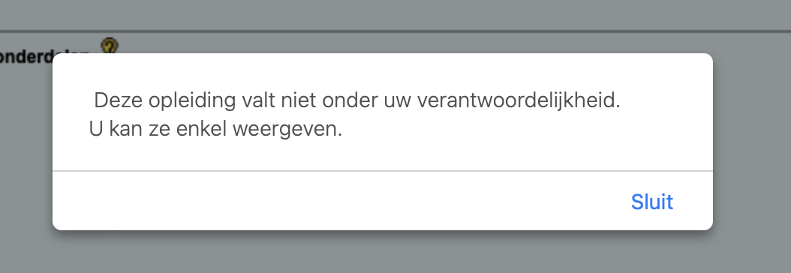
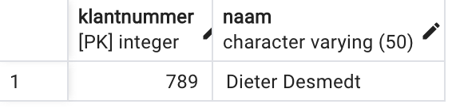
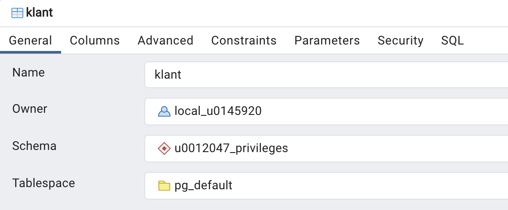
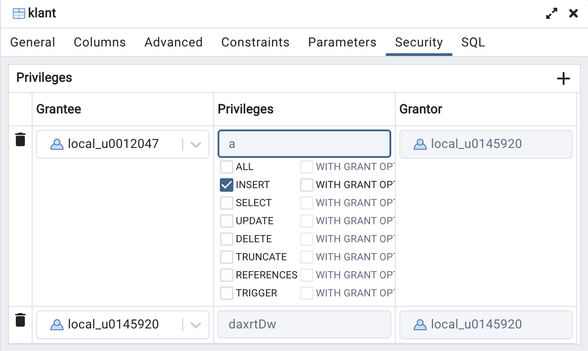

When my brothers try to draw a circle to exclude me, I shall draw a
larger circle to include them. Where they speak out for the privileges
of a puny group, I shall shout for the rights of all mankind.
—Pauli Murray
Toekennen van PRIVILEGES
Denk even aan je ISP in KULoket. Achter KULoket zit een uitgebreide
databank. In het begin van elk semester kan je in je ISP aanpassingen doen
bvb. OPO's toevoegen of weglaten, reeksen aanpassen in een andere fase dan
je basisfase enz.
Je kan vanzelfsprekend het ISP van een andere student niet bekijken,
want dat is persoonlijke informatie
. Maar heb je je al eens afgevraagd wie binnen UCLL dan wel toegang
tot je ISP heeft? Wie het kan wijzigen?
Je studententrajectcoach (STC), dat spreekt vanzelf want je kan het ISP
met je STC bespreken, die het trouwens ook moet goedkeuren. Mensen van het
studentensecretariaat moeten bvb. soms de basisreeks aanpassen, dus die
krijgen ook toegang. Gewone lectoren (zonder STC-rol) kunnen echter geen
ISP's van studenten bekijken.
In dit hoofdstukje geven we je een vereenvoudigde inkijk in het
rechtensysteem van PostgreSQL.
Privileges — rechten
Als STC heb ik beperkte toegang tot alle ISP's in KULoket. Als ik
naar het ISP van mijn zoon David (studeerde aan KULeuven) ga, krijg ik deze
melding:

Ik heb dus wel het recht om een overzicht van het ISP te raadplegen, maar
niet om er wijzigingen in aan te brengen.
Kan je een reden bedenken waarom een STC van UCLL toch ISP's van
KULeuven studenten kan raadplegen?
Eén reden is dat een studententrajectcoach van UCLL nieuwe studenten
moet kunnen adviseren die al iets aan KULeuven deden. Om te kunnen
beoordelen of een zo'n student vrijstellingen zou kunnen krijgen is
het zinvol dat je als STC toch een overzicht kan opvragen van elke
student aan de associatie KULeuven. Een STC moet enkel kunnen zien
welke credits een student behaalde, niet met welke cijfers dit
gebeurde. Die punten krijg ik dus niet te zien!
We spreken binnen Postgresql over ‘privileges’. Rechten toekennen aan
andere gebruikers doe je in SQL met GRANT ... PRIVILEGE ... TO. We geven eerst enkele voorbeelden en dan bespreken we de GRANT statements die nuttig kunnen zijn voor een database-opdracht waarbij je moet
samenwerken met andere mensen binnen hetzelfde databaseschema.
GRANT
Zonder in detail te gaan, eerst enkele voorbeelden:
GRANT USAGE ON SCHEMA examenoef TO student: alle gebruikers
die de rol ‘student’ hebben krijgen toegang tot het schema ‘examenoef’.
GRANT SELECT ON TABLE klant TO local_r0987654: gebruiker
‘local_r0987654’ mag SELECT statements uitvoeren op de tabel
‘klant’ in het huidig schema.
GRANT ALL ON ALL TABLES IN SCHEMA project TO local_01234567,
local_02345678, local_03456789: geef deze drie studenten alle rechten op alle tabellen
waarvan jij de eigenaar bent.
Je definieert toegangsrechten met het GRANT statement. Dit is
een van de meer complexe statements in SQL. We beperken ons tot die dingen
die nuttig zijn voor een eventueel groepswerk. Uit de uitgebreide documentatie van GRANT halen we enkele mogelijkheden. Geen paniek als het volgende je wat overdondert.
We werken het uit in de volgende secties.
De formele definitie ziet er zo uit:
GRANT { { SELECT | INSERT | UPDATE | DELETE | TRUNCATE | REFERENCES | TRIGGER }
[, ...] | ALL [ PRIVILEGES ] }
ON { [ TABLE ] table_name [, ...]
| ALL TABLES IN SCHEMA schema_name [, ...] }
TO role_specification [, ...] [ WITH GRANT OPTION ]
[ GRANTED BY role_specification ]
GRANT { { CREATE | USAGE } [, ...] | ALL [ PRIVILEGES ] }
ON SCHEMA schema_name [, ...]
TO role_specification [, ...] [ WITH GRANT OPTION ]
[ GRANTED BY role_specification ]
No panic! Verwerk eerst de rest van dit hoofdstuk en kom dan even
terug naar bovenstaande definitie. Die zal er dan een heel stuk leesbaarder
uitzien.
Praktische oefening i.v.m. rechten
In wat volgt gaan we praktisch aan de slag in postgreSQL. We gebruiken
pgAdmin. Je maakt deze oefeningen liefst per twee. Eventueel kan het ook
alleen (bvb. voor studenten in het afstandstraject). Elke student heeft
immers twee gescheiden gebruikers: je r-nummer op de gewone connectie
52324 en je local_rnummer op de pooling-connectie 62324. De oefeningen
zijn opgezet als een soort rollenspel tussen twee gebruikers (‘Alpha’ en ‘Bravo’).
Schermafbeeldingen en code hieronder zijn gemaakt voor de gebruiker
‘local_u0012047’ (‘Alpha’, hier vertolkt door lector Jan) en gebruiker
‘local_0145920’ (‘Bravo’, lector Steven). Als je de oefening zelf maakt,
vervang je natuurlijk onze twee gebruikersnamen door je eigen r-nummer.
Voer de stappen uit in de volgende werktekst. Als iets fout loopt, lees
dan even verder. We laten je met opzet hier en daar fouten begaan om
daaruit te leren …
Eigenaar
Wie een object (schema, tabel, …) maakt in een databank is automatisch
eigenaar van dit object.
Voer nu volgende stappen uit in de databank die hoort bij je reeks (‘1TX31’,
…):
Alpha maakt een nieuw schema met als naam ‘u0012047_privileges’ in
de pooling-connectie 62324.
Bravo gebruikt ook de pooling-connectie.
Alleen de eigenaar heeft momenteel rechten om iets te doen in dit
schema. Om dit aan te tonen probeert Bravo een tabel te maken in dit
schema.
Bravo maakt (via een CREATE statement) een heel eenvoudige
tabel ‘klant’ met slechts twee kolommen: klantnummer (geheel getal, dit
is de primaire sleutel dus verplicht) en naam (varchar(50), ook verplicht).
Vergeet niet de naam van het schema voor de naam van de tabel te
vermelden, want anders maak je een nieuwe tabel aan in public! Normaal gezien krijgt Bravo een foutmelding in de stijl van:
ERROR: permission denied for schema u0012047_privileges
LINE 1: create table u0012047_privileges.klant (
^
SQL state: 42501
Character: 14
Rechten geven op je schema
Bravo kan geen nieuwe objecten (zoals een tabel) maken in het schema van
Alpha.
Het is nu aan de eigenaar van het schema om de juiste rechten toe te
kennen aan een andere gebruiker.
Breng nu volgende stappen in de praktijk:
Alpha geeft bepaalde rechten op het schema aan Bravo. Dat kan heel
beperkt zijn tot enkel gebruik (USAGE), zoals we dat
bvb. voor het schema instellen op een examen. We willen immers
niet dat studenten zelf in het schema aanpassingen maken (nieuwe
tabellen enz). Alpha wil echter dat zijn groepsgenoot wel in zijn
schema kan werken en typt volgend commando in een query tool:
GRANT ALL PRIVILEGES ON SCHEMA u0012047_privileges TO local_0145920
-- Het woord PRIVILEGES is niet verplicht, dus korter is:
GRANT ALL ON SCHEMA u0012047_privileges TO local_0145920
Als alles goed gaat antwoordt de server met:
GRANT
Query returned successfully in 60 msec.
Bravo heeft nu alle rechten gekregen op het schema van Alpha.
Alhoewel … alle rechten? Bravo probeert het schema te droppen:
DROP SCHEMA u0012047_privileges
De databankserver antwoordt echter met een foutmelding:
ERROR: must be owner of schema u0012047_privileges
SQL state: 42501
Met ander woorden: ALL PRIVILEGES betekent eigenlijk ‘alles
behalve DROP. Je kan nooit het schema van iemand
anders droppen, tenzij je superuser van de databankserver
bent.
Bravo probeert nu opnieuw in het schema van Alpha de nieuwe tabel
‘klant’ te maken. Dat zou nu wel moeten lukken. Probeer dit uit!
Rechten geven op een tabel
Bravo heeft de kleine tabel ‘klant’ succesvol kunnen aanmaken. We proberen
nu volgende dingen uit op deze tabel.
Bravo voegt een klant met nummer 789 en naam ‘Dieter Desmedt’ toe
aan de tabel. Dat zou zonder probleem moeten lukken, zie figuur:

Alpha probeert een rij toe te voegen aan de tabel ‘klant’ (‘Wim
Claes’ met klantnummer 5). Die krijgt echter volgende foutmelding:
ERROR: permission denied for table klant
SQL state: 42501
Die foutmelding is logisch, want Alpha is niet de eigenaar van het
tabelobject ‘klant’. Dat Alpha wel de eigenaar is van het schema doet niets ter
zake, want het gaat hier enkel over de rechten op de tabel zelf.
Bravo geeft nu INSERT recht aan Alpha:
GRANT INSERT ON TABLE u0012047_privileges.klant to local_u0012047;
Die rechten kan je mooi visualiseren in pgAdmin. Klik rechts op de
tabel ‘klant’ en kies properties… Onderstaande figuur vertelt me
dat local_0145920 de eigenaar is van deze tabel:

Het tabblad ‘security’ geeft extra informatie:

Even een paar woorden vertalen: ‘grantor’ is diegene die de
rechten geeft, ‘grantee’ is de ontvanger van de rechten. Deze
screenshot toont dat gebruiker local_u0145920 INSERT rechten
gegeven heeft aan gebruiker local_u0012047. Je kan trouwens in dit tabblad zelf de rechten aanpassen en dit
bewaren. Je moet het echter in elk geval voor het examen ook
m.b.v. SQL statements in pgAdmin kunnen.
Nu kan Alpha wel een rij toevoegen aan de tabel:
INSERT INTO u0012047_privileges.klant VALUES(5,'Wim Claes')
Alpha merkt echter dat dit niet de juiste klant is, dus die moet
verwijderd worden:
DELETE FROM u0012047_privileges.klant
WHERE klantnummer = 5
Verklaar wat er gebeurt als deze query uitgevoerd wordt.
Bravo geeft Alpha ook DELETE rechten. Alpha probeert vervolgens
de klant met nummer 5 nogmaals te verwijderen met de query die hierboven
staat. Het verrassend resultaat is dat dit niet lukt omdat Alpha hier
onvoldoende rechten heeft! Hoe kan dat? De eigenaar van de tabel (Bravo)
gaf toch net DELETE rechten?
Het antwoord op deze vragen staat in de documentatie van postgres. We citeren even: “In practice, any nontrivial DELETE command will require SELECT privilege as well, since
it must reference table columns to determine which rows to delete.”.
Aangezien de DELETE query hierboven de rij met klantnummer
5 moet kunnen selecteren, moet Alpha dus ook SELECT rechten krijgen.
Bravo, geef je student ook de SELECT rechten op je tabel,
zodat Alpha uiteindelijk toch de foute rij kan verwijderen? Fijn!
Overzicht rechten
Je vindt de volledige lijst van privileges op de reeds vermelde pagina. Voor ons de meest interessante zijn (het systeem is veel uitgebreider
dan dit klein overzichtje):
ALL: alle rechten (behalve DROP).
SELECT: kolom(men) in een tabel selecteren. Zo goed als
altijd ook nodig voor UPDATE en DELETE privileges.
UPDATE: recht om kolommen in een tabel te updaten.
DELETE: rijen verwijderen in een tabel.
CREATE: recht op in een database een nieuw schema te maken,
of in een bestaand schema een nieuwe tabel aan te maken.
USAGE: recht om in een schema toegang te krijgen.
Voor een groepswerk zal je in de praktijk aan de groepsgenoten alle
rechten geven. Eén persoon maakt het schema en geeft iedereen rechten:
GRANT ALL ON SCHEMA ... TO local_r1, local_r2, local_r3
Elke student die in dit schema een nieuwe tabel maakt, geeft dan aan de
anderen alle rechten op die tabellen. Je kan ook ineens privileges geven
op alle tabellen in een schema:
GRANT ALL ON ALL TABLES IN SCHEMA ... TO ...
Op het examenschema van de gewone dagopleiding passen we volgende
privileges toe:
GRANT USAGE ON SCHEMA examenschema TO student;
GRANT SELECT ON ALL TABLES IN SCHEMA examenschema TO student;
Je krijgt op het examen m.a.w. toegang tot alle tabellen van het schema en
kan enkel SELECT query's uitvoeren.
REVOKE
Alles wat je kan toekennen qua privileges kan je ook afnemen met REVOKE. Je vervangt in bovenstaande voorbeelden gewoon
het woord GRANT door REVOKE.